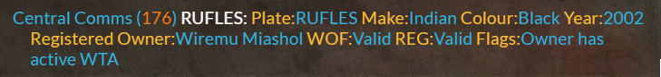
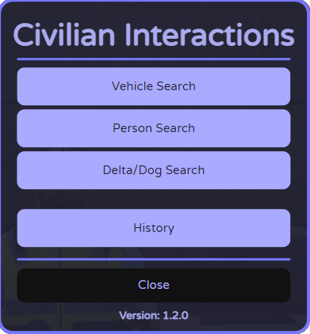

Most of the interactions that Police will have with Civilians will be case by case relating to that scene.
There are a bunch of different commands that will assist you in getting the most out of your RP.
Vehicle details will be displayed per the registration plate (number plate) located on the vehicle itself.
NB: Bear in mind some vehicle models will not have GTA‑styled plates; although the Development Team does their best to avoid this, sometimes it’s not possible, so please allow some leniency.
Once given their details, use /QP to run a check for their name and /QVR  for their vehicle.
If a player fails to respond to their QP/QVR (which should be set up in /civ), then use /bump ID to remind them. This will send a large, flashing message to the players screen.
If a player has not set up their QP/QVR, feel free to direct them to the Civilian Section in the /help Guidebook, or to get help from Staff.
Use this for Player/Vehicle searches and Roadside Breath Tests:
Open chat, type /imenu, and select an option
Press T to open chat, then type /c to cuff or /d to drag.
Note: Bind them in your FiveM keybinds settings.
Remember: Rule 2.5.2 – no tackling to instant‑cuff; suspects must be stationary.
Players can type a few different commands to display certain observations, below are some of the options